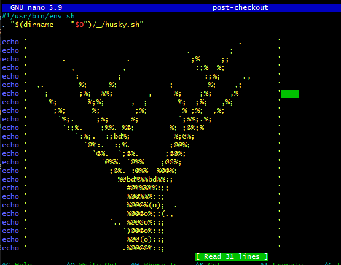
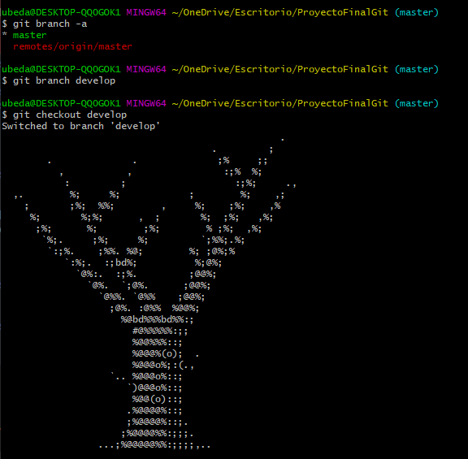
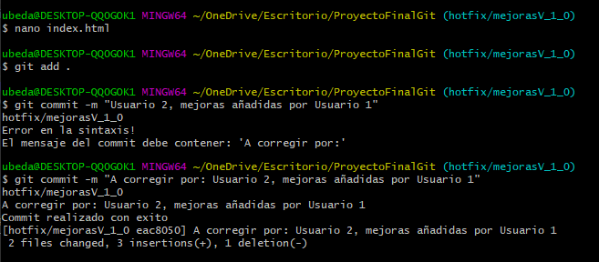

Introducción:
¿Qué es git?
Git es un proyecto de código abierto maduro y con un mantenimiento activo que desarrolló originalmente
Linus Torvalds, el famoso creador del kernel del sistema operativo Linux, en 2005.
Git, que presenta una arquitectura distribuida, es un ejemplo de DVCS (sistema de control de versiones
distribuido, por sus siglas en inglés). La copia de trabajo del código de cada desarrollador es también
un repositorio que puede albergar el historial completo de todos los cambios.
Además de contar con una arquitectura distribuida, Git se ha diseñado teniendo en cuenta el rendimiento,
la seguridad y la flexibilidad.
¿Qué es git flow, y por qué lo utilizamos en nuestro proyecto?
Gitflow es un modelo alternativo de creación de ramas en Git en el que se utilizan ramas de función y
varias ramas principales. Fue Vincent Driessen en nvie quien lo publicó por primera vez y quien lo popularizó.
Según este modelo, los desarrolladores crean una rama de función y retrasan su fusión con la rama principal
del tronco hasta que la función está completa. Gitflow puede utilizarse en proyectos que tienen un ciclo de
publicación programado. Este flujo de trabajo no añade ningún concepto o comando nuevo, aparte de los que se
necesitan para el flujo de trabajo de ramas de función.
Lo utilizamos en nuestro proyecto por que cumple los requerimientos de trabajo en equipo que requiere la
práctica y así poder tener un flujo de trabajo adecuado entre los miembros del equipo. Es un método mas
tedioso y largo de mantener pero es más seguro
USUARIO 1
Creación del proyecto
El usuario 1 creará el repositorio donde aplicará la plantilla de referencia que, como dice en el github de esta, se hará con el comando "npx create-html5-boilerplate new-site". Posteriormente, en esta nueva carpeta se hará un "npm install" para crear el proyecto.
Una vez creado el proyecto, el usuario 1 modificará el index.html del proyecto y lo adaptará a como se pide en la práctica.
Creación del repositorio remoto

El siguiente paso será inicializar git en el repositirio y añadir los archivos al repositorio local para posteriormente realizar el commit y agregarlo al repositorio remoto que se habrá creado en github.
Librería Husky
Ahora el usuario 1 agregará la libreria husky al proyecto para realizar los hooks correspondientes. Creará los archivos hooks dedeados: post-checkout y pre-commit-msg.
Prepare-commit-msg: comprobará que siempre que se realice un commit en la rama hotfix exista una persona asignada para verificar que todo este correcto. Para ello, deberá comprobar que el mensaje de commit contiene la frase “A corregir por: …”.

Post-checkout: mostrará en consola un mensaje con un dibujo hecho con caracteres ascii una vez hagamos el checkout de una rama del proyecto.
A continuación, se realizará un "git add ." y su posterior "git commit" para luego subirlo al repositorio remoto con un "git push".
Git flow y ramas correspondientes
El usuario 1 creará las ramas establecidas por la metodología git flow para el correcto flujo del proyecto. Empezará creando la rama develop.
Además, se añadirá la rama al repositorio remoto con un "git push origin develop".
USUARIO 2
Eslint plugin
Antes de realizar sus funciones, el usuario 2 deberá haber agregado la dependencia de trabajo de eslint, para ello el usuario 1 realizará un "npm install eslint eslint-plugin-html". Este verificará el correcto formato en los ficheros html.
En este plugin, se configurará el fichero ".eslintrc.json". La configuración comprueba que el indentado se realice con 6 espacios. Además, se añadirá un nuevo hook "pre-commit" que ejecutará el eslint.
Posteriormente, lo subirá al repositorio remoto con un commit y un push.

Creación de ramas features
El usuario 2, desde la rama develop, creará las dos ramas feature que pide la práctica. Feature/contenidoHTML y feature/atributos/HTML.
Desde la rama Feature/contenidoHTML modificará el index.html y lo subirá al repositorio remoto haciendo un push de esta rama.
Creación de pull request
Después de realizar el push, y haber creado un issue en github, el usuario 2 creará una pull request en github en la cual realizará un merge de la rama feature/contenidoHTML con la rama develop.
Issue Usuario 2
Pull request Usuario 2
El siguiente paso será realizar el mismo proceso pero desde la rama feature/atributoHTML

Pull request Usuario 2
Una vez hechos los merges de las ramas feature, se podrán marcar como realizadas las tareas en el issue creado previamente.
A continuación, se volverá a la rama develop y se realizaráun pull para actualizar el repositorio local.
USUARIO 3
Creación de rama feature
Ahora, el Usuario 3 creará una nueva rama feature desde la rama de develop para realizar su tarea. Para ello ara un "git branch feature/estilosCSS".
Además, como ya realizó el Usuario 2, el Usuario 3 creará una nueva issue con la lista de tareas que debe realizar.
El Usuario 3 realizará los cambios correspondientes desde la rama de features/estilosCSS y lo subirá al repositorio remoto.
Pull request Usuario 3

Creación de rama release
Primeramente, el Usuario 3 volverá a actualizar la rama develop haciendo un "git pull oriigin develop" para tener los últimos cambios del pull request en el repositorio local.
Posteriormente, el Usuario 3 creará una nueva rama llamada release/1.0 con un tag en el último commit realizado
Una vez hecho esto, lo subirá al repositorio remoto con un "git push origin release/1.0 --tags" para agregar el tag también.
En el siguiente paso, el Usuario 3 juntará la rama release/1.0 con la rama master para tener actualizado el proyecto. Como en la rama release/1.0 no hay cambios, no hará falta juntarla con la rama develop también.

Si todo se ha realizado correctamente, en la rama master deberiamos tener el proyecto actualizado y tener todos los cambios realizados en la rama develop y en las ramas feature. Para comprobarlo, se realiza un git pull origin master desde esta rama y se comprueba, por ejemplo, el contenido de index.html.
Ahora también estará terminada la issue del Usuario 3.
USUARIO 1
Por último, desde la rama master, el Usuario 1 creará una nueva rama llamada hotfix/mejorasV_1_0 y su respectiva issue en github.
Una vez situado en ella, el Usuario 1 realizará los cambios correspondientes, además se podrá comprobar el correcto funcionamiento del hook "prepare-commit-msg". Además, haremos también un push al repositorio remoto y realizará el pull request.
Pull request Usuario 1
Una vez hecha la pull request, también podremos cerrar la issue.
Para terminar, desde la rama master además de hacer un pull para actualizarla, se podrán borrar ya las ramas de feuature y hotfix.
Y también las ramas remotas. Y así dejar mas limpio el flujo de trabajo.